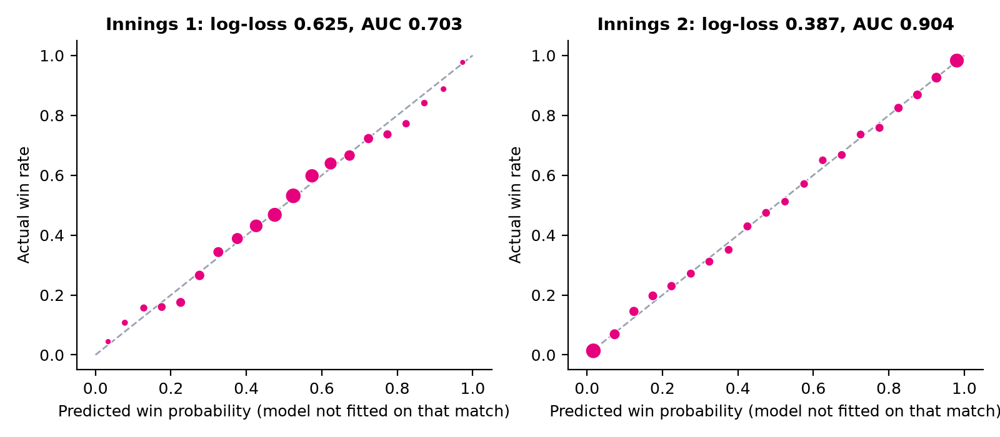
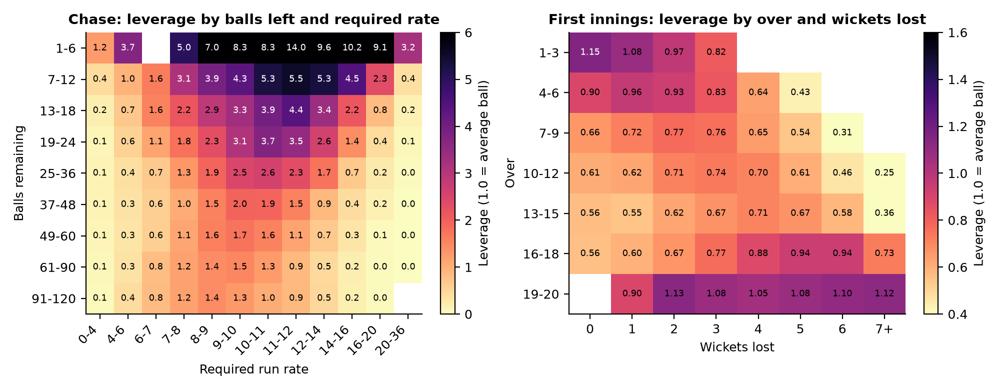
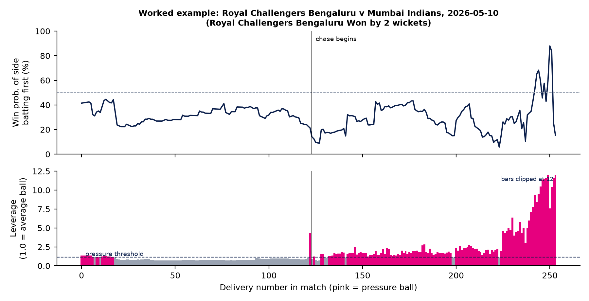
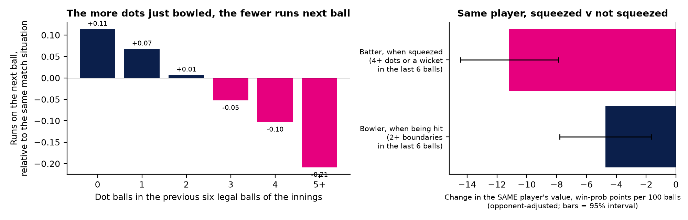
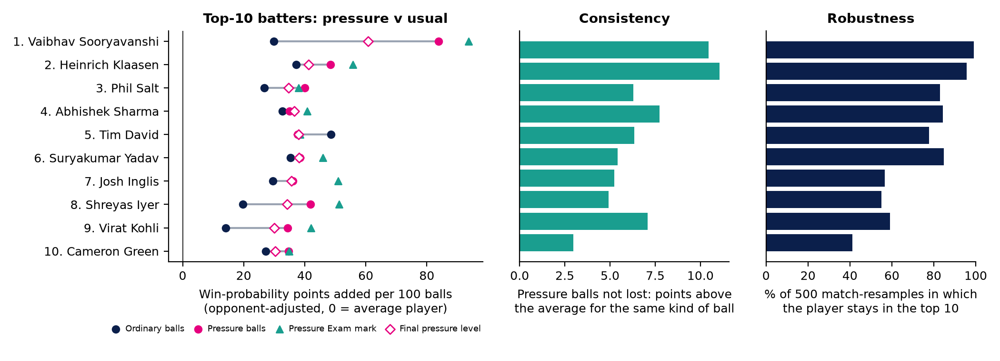
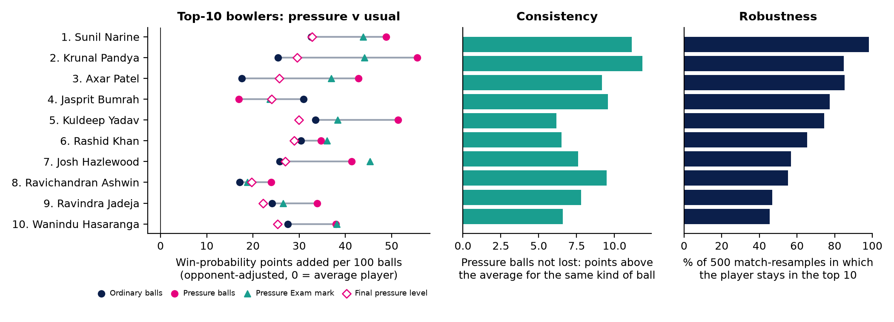
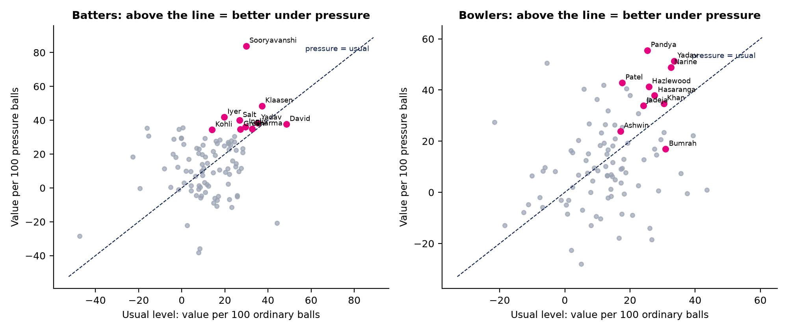
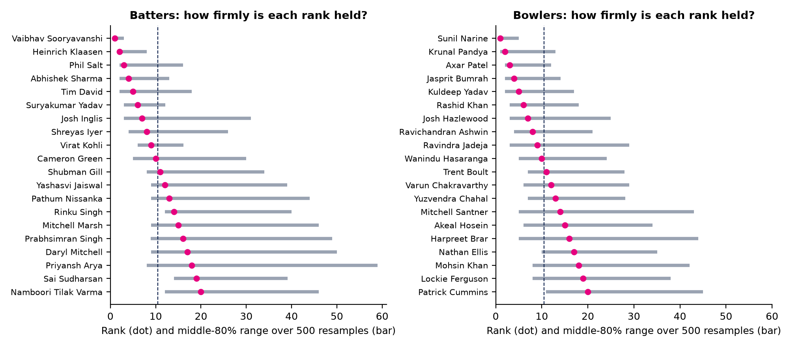
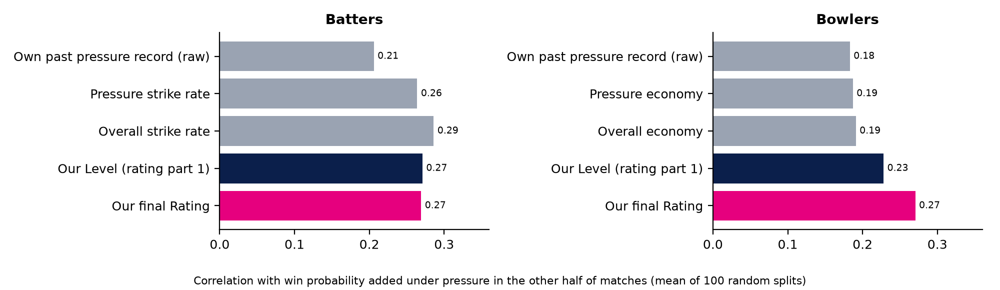
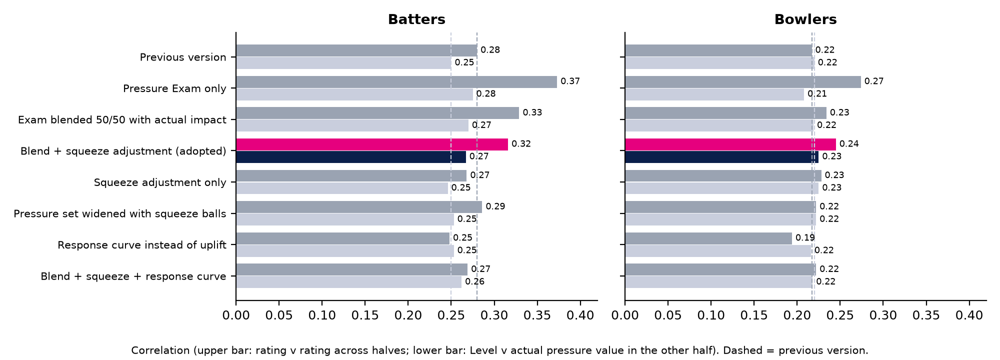

<title>Pressure Rating Explained</title>
<meta name="claude:viewport-fit-sides" content="cover">
<link rel="stylesheet" href="https://fonts.googleapis.com/css2?family=Inter:wght@400;500;600&family=Space+Grotesk:wght@500;600;700&family=JetBrains+Mono:wght@400;500&display=swap">
<style>
/* Layout: one reading column (max 46rem) with a contents list up top; tables and charts scroll inside their own boxes. */
:root {
  --bg: #f7f7fb; --surface: #ffffff; --fg: #141a33; --muted: #5a6180; --line: #dcdfeb;
  --accent: #c2186f; --accent-soft: #fbe6f1; --navy: #0b1f4b; --good: #1f7a5a; --warn: #a15c00;
  --fig-bg: #ffffff;
  --display: "Space Grotesk", "Segoe UI", system-ui, sans-serif;
  --body: "Inter", "Segoe UI", system-ui, sans-serif;
  --mono: "JetBrains Mono", ui-monospace, Consolas, monospace;
}
@media (prefers-color-scheme: dark) { :root:not([data-theme="light"]) {
  --bg: #0e1222; --surface: #171c31; --fg: #e8eaf4; --muted: #a1a7c2; --line: #2b3250;
  --accent: #ff6fb5; --accent-soft: #3a1830; --navy: #9db4ff; --good: #5fd3a6; --warn: #f0b35a; --fig-bg: #ffffff; color-scheme: dark } }
:root[data-theme="dark"] {
  --bg: #0e1222; --surface: #171c31; --fg: #e8eaf4; --muted: #a1a7c2; --line: #2b3250;
  --accent: #ff6fb5; --accent-soft: #3a1830; --navy: #9db4ff; --good: #5fd3a6; --warn: #f0b35a; --fig-bg: #ffffff; color-scheme: dark }
body { background: var(--bg); color: var(--fg); font-family: var(--body); font-size: 16px; line-height: 1.62;
  padding-left: max(16px, env(safe-area-inset-left, 0px)); padding-right: max(16px, env(safe-area-inset-right, 0px)); padding-block: 2.5rem 4rem; }
main { max-width: 46rem; margin: 0 auto; display: flex; flex-direction: column; gap: 1.1rem; min-width: 0; }
h1, h2, h3 { font-family: var(--display); text-wrap: balance; line-height: 1.2; margin: 0; }
h1 { font-size: clamp(1.9rem, 5vw, 2.6rem); font-weight: 700; letter-spacing: -0.01em; }
h2 { font-size: 1.5rem; margin-top: 2.2rem; padding-top: 1.4rem; border-top: 1px solid var(--line); }
h3 { font-size: 1.1rem; margin-top: 0.8rem; color: var(--navy); }
p, ul, ol { margin: 0; }
ul, ol { padding-left: 1.3rem; display: flex; flex-direction: column; gap: 0.4rem; }
.eyebrow { font-family: var(--mono); font-size: 0.78rem; letter-spacing: 0.08em; text-transform: uppercase; color: var(--accent); }
.lede { font-size: 1.12rem; color: var(--muted); }
.step { font-family: var(--mono); font-size: 0.78rem; color: var(--accent); letter-spacing: 0.06em; text-transform: uppercase; display: block; margin-bottom: 0.3rem; }
strong { font-weight: 600; }
code, .num { font-family: var(--mono); font-size: 0.9em; }
nav { background: var(--surface); border: 1px solid var(--line); border-radius: 8px; padding: 1rem 1.2rem; }
nav ol { columns: 2; column-gap: 2rem; display: block; font-size: 0.95rem; }
nav li { margin-bottom: 0.3rem; break-inside: avoid; }
a { color: var(--accent); }
a:focus-visible { outline: 2px solid var(--accent); outline-offset: 2px; }
.note { background: var(--accent-soft); border-radius: 8px; padding: 0.9rem 1.1rem; }
.note b { font-family: var(--display); }
.plain { background: var(--surface); border: 1px solid var(--line); border-radius: 8px; padding: 0.9rem 1.1rem; }
figure { margin: 0.4rem 0; }
figure .img { background: var(--fig-bg); border: 1px solid var(--line); border-radius: 8px; padding: 0.5rem; overflow-x: auto; }
figure img { display: block; max-width: 100%; height: auto; margin: 0 auto; }
figcaption { font-size: 0.86rem; color: var(--muted); margin-top: 0.4rem; }
.scroll { overflow-x: auto; border: 1px solid var(--line); border-radius: 8px; background: var(--surface); }
table { border-collapse: collapse; width: 100%; font-size: 0.9rem; font-variant-numeric: tabular-nums; }
th, td { padding: 0.45rem 0.7rem; text-align: left; border-bottom: 1px solid var(--line); white-space: nowrap; }
th { font-family: var(--display); font-weight: 600; font-size: 0.82rem; color: var(--muted); }
td.r, th.r { text-align: right; }
td.wrap { white-space: normal; min-width: 14rem; }
tr:last-child td { border-bottom: 0; }
.up { color: var(--good); font-weight: 600; } .dn { color: var(--warn); font-weight: 600; }
.formula { font-family: var(--mono); font-size: 0.92rem; background: var(--surface); border: 1px solid var(--line); border-radius: 8px; padding: 0.8rem 1rem; overflow-x: auto; white-space: nowrap; }
.two { display: grid; grid-template-columns: repeat(auto-fit, minmax(15rem, 1fr)); gap: 1rem; }
.two > div { min-width: 0; }
pre.mermaid { background: var(--fig-bg); border: 1px solid var(--line); border-radius: 8px; padding: 0.8rem; overflow-x: auto; margin: 0; }
dl { display: grid; grid-template-columns: minmax(8rem, 12rem) 1fr; gap: 0.5rem 1rem; margin: 0; }
dt { font-family: var(--display); font-weight: 600; } dd { margin: 0; }
@media (max-width: 560px) { nav ol { columns: 1; } dl { grid-template-columns: 1fr; gap: 0.1rem 0; } dd { margin-bottom: 0.6rem; } }
</style>

<main>
<span class="eyebrow">SupeRR Selector Season 2 · Round 1</span>
<h1>How we worked out who delivers under pressure</h1>
<p class="lede">The whole project from scratch: the raw files, the method, every test it went through, and the two top-10 lists it produced. No statistics background is assumed.</p>
<div class="plain">
<span class="step">The lists to enter on Unstop</span>
<div class="scroll" style="margin-top:0.4rem"><table>
<tr><th class="r">#</th><th>Batters</th><th>Bowlers</th></tr>
<tr><td class='r'>1</td><td>Vaibhav Sooryavanshi</td><td>Sunil Narine</td></tr><tr><td class='r'>2</td><td>Heinrich Klaasen</td><td>Krunal Pandya</td></tr><tr><td class='r'>3</td><td>Phil Salt</td><td>Axar Patel</td></tr><tr><td class='r'>4</td><td>Abhishek Sharma</td><td>Jasprit Bumrah</td></tr><tr><td class='r'>5</td><td>Tim David</td><td>Kuldeep Yadav</td></tr><tr><td class='r'>6</td><td>Suryakumar Yadav</td><td>Rashid Khan <span class="num">·</span></td></tr><tr><td class='r'>7</td><td>Josh Inglis <span class="num">·</span></td><td>Josh Hazlewood <span class="num">·</span></td></tr><tr><td class='r'>8</td><td>Shreyas Iyer <span class="num">·</span></td><td>Ravichandran Ashwin <span class="num">·</span></td></tr><tr><td class='r'>9</td><td>Virat Kohli <span class="num">·</span></td><td>Ravindra Jadeja <span class="num">·</span></td></tr><tr><td class='r'>10</td><td>Cameron Green <span class="num">·</span></td><td>Wanindu Hasaranga <span class="num">·</span></td></tr>
</table></div>
<p style="margin-top:0.7rem">A dot (·) marks a contested place: a near-equal player could hold it instead (<a href="#firm">section 11</a>). The rest are firm. The data pack has two players called Rashid Khan; ours is the Afghanistan and Gujarat Titans leg-spinner (player_id 4722), not the Nepal player. The most important finding is that nobody's ability to rise under pressure can be told apart from luck in this data, so the lists rank the players worth most in pressure situations (<a href="#trust">section 13</a>).</p>
</div>
<nav aria-label="Contents"><ol>
<li><a href="#task">The task</a></li><li><a href="#idea">The idea in one minute</a></li><li><a href="#data">The data</a></li>
<li><a href="#wp">Win probability</a></li><li><a href="#pressure">Pressure balls</a></li><li><a href="#kinds">Two more kinds of pressure</a></li>
<li><a href="#value">Valuing each ball</a></li><li><a href="#luck">Luck, and how we discount it</a></li><li><a href="#rating">The rating</a></li>
<li><a href="#fair">Fair comparisons</a></li><li><a href="#firm">Three models; firm and contested places</a></li><li><a href="#results">The results</a></li>
<li><a href="#trust">How far to trust them</a></li><li><a href="#built">How the method was built</a></li><li><a href="#limits">What the method cannot see</a></li>
<li><a href="#files">Files and glossary</a></li></ol></nav>

<h2 id="task">1. The task</h2>
<p>Rajasthan Royals supplied a data pack of T20 matches, IPL and internationals, and asked one question: <strong>which batters and bowlers are the most reliable under pressure?</strong> Two things go in on Unstop: an ordered top 10 for batters and one for bowlers, picked from dropdowns, and a methodology report. The report must say how we defined pressure, how we measured performance, how we kept comparisons fair, what evidence backs the lists, and where the method is weak.</p>
<p>The brief adds that the answer must come from the supplied data, not from reputation. That sentence shaped most decisions below.</p>

<h2 id="idea">2. The idea in one minute</h2>
<p>Most people define pressure with rules of thumb: the last five overs, a required rate above 10, three wickets down early. Those rules clash, and each needs an arbitrary cut-off. We used one quantity that combines them.</p>
<div class="note"><b>Pressure is what the next ball can do to the result.</b> If one ball can swing the chance of winning a long way, it is a pressure ball. If the match is already decided, or there is plenty of time to recover, it is not.</div>
<p>Once pressure is defined that way, performance uses the same currency: how much did a player's balls change their team's chance of winning? The rest of the work makes that comparison fair and stops luck from deciding it.</p>
<pre class="mermaid">
flowchart LR
  A[Ball-by-ball data] --> B[Match state before every ball]
  B --> C[Win-probability model]
  C --> D[Leverage: how much the next ball can swing the result]
  D --> E[Pressure balls: top 25% by leverage]
  K[Knockout weight] --> E
  C --> F[Value of each ball: actual and exam]
  Q[Squeeze: what has just happened] --> G
  E --> G[Rates on pressure and ordinary balls]
  F --> G
  G --> H[Adjust for opponents, discount luck]
  H --> I[Level and consistency]
  I --> J[Average over three models]
  J --> L[Top 10 with firm and contested places]
</pre>

<h2 id="data">3. The data</h2>
<p>The pack has six files: competitions, teams, matches, the ball-by-ball log, squad lists and playing elevens. The ball-by-ball log does most of the work. Each row is one delivery: who bowled, who faced, the runs, the extras and any wicket.</p>
<div class="scroll"><table>
<tr><th>Step</th><th class="r">Count</th><th>Why</th></tr>
<tr><td>Matches in the pack</td><td class="r">883</td><td>IPL 2022 to 2026 and T20 internationals</td></tr>
<tr><td>With ball-by-ball records</td><td class="r">867</td><td>The rest have only a scorecard line</td></tr>
<tr><td>Rain-revised matches removed</td><td class="r">34</td><td class="wrap">A revised target makes "runs needed" ambiguous</td></tr>
<tr><td>Abandoned or incomplete removed</td><td class="r">30</td><td>No clean result to learn from</td></tr>
<tr><td><strong>Matches analysed</strong></td><td class="r"><strong>803</strong></td><td class="wrap">353 IPL and 450 international; 191,903 deliveries</td></tr>
</table></div>
<ul>
<li><strong>Which balls are legal.</strong> The extras column marks wides, "Overstep" and "other". We guessed that "other" is a no-ball and tested it: counting all three as illegal makes 31,757 of 32,338 overs exactly six balls long, and the rest are overs that never finished. The guess holds.</li>
<li><strong>The state before every ball.</strong> We rebuilt balls left, runs, wickets lost and, in a chase, runs needed. The rebuilt totals give the recorded winner in all 794 decided matches.</li>
<li><strong>Par.</strong> A total of 180 is ordinary in IPL 2026 and big in a 2022 international. For each competition and year we computed the average first-innings total (171 in IPL 2022, 196 in IPL 2026, 166 to 180 in internationals) and gave it to the model.</li>
</ul>

<h2 id="wp">4. Win probability</h2>
<p>A win-probability model answers one question: from this exact situation, how often does the batting side go on to win? Needing 30 off 12 with five wickets left might be 22%. The model learns this from what happened in hundreds of matches from similar situations.</p>
<p>In a chase it uses balls left, runs needed, wickets in hand and par, and averages two standard statistical models: a logistic regression, which turns a weighted sum of cricket-shaped inputs such as the required rate into a probability, and a tree model, built from many small decision rules and forced to obey common sense, so more balls or wickets can never lower the chance of winning. In the first innings a logistic regression uses runs, wickets, balls left, par and a projected total.</p>
<p>A model can look brilliant on matches it has already seen, so we split the matches into five groups and always predicted each group with a model fitted on the other four. On those unseen matches, the model rates the eventual winner's position above the loser's 90% of the time in the chase and 70% in the first innings, where far less is known before a target exists (50% would be guessing; statisticians call this the AUC).</p>
<figure><div class="img"></div>
<figcaption>When the model says 70%, the batting side wins about 70% of the time. Points on the diagonal mean the probabilities can be trusted.</figcaption></figure>
<div class="scroll"><table>
<tr><th>Segment</th><th class="r">Matches</th><th class="r">Predicted</th><th class="r">Actual</th><th class="r">Gap</th></tr>
<tr><td>All matches</td><td class="r">794</td><td class="r">0.490</td><td class="r">0.490</td><td class="r">0.007</td></tr>
<tr><td>IPL</td><td class="r">351</td><td class="r">0.490</td><td class="r">0.490</td><td class="r">0.006</td></tr>
<tr><td>Internationals</td><td class="r">443</td><td class="r">0.491</td><td class="r">0.490</td><td class="r">0.013</td></tr>
<tr><td>2022 season</td><td class="r">166</td><td class="r">0.486</td><td class="r">0.494</td><td class="r">0.034</td></tr>
<tr><td>2023 season</td><td class="r">127</td><td class="r">0.490</td><td class="r">0.495</td><td class="r">0.031</td></tr>
<tr><td>2024 season</td><td class="r">181</td><td class="r">0.480</td><td class="r">0.489</td><td class="r">0.019</td></tr>
<tr><td>2025 season</td><td class="r">190</td><td class="r">0.497</td><td class="r">0.487</td><td class="r">0.016</td></tr>
<tr><td>2026 season</td><td class="r">130</td><td class="r">0.501</td><td class="r">0.489</td><td class="r">0.025</td></tr>
<tr><td>First innings</td><td class="r">794</td><td class="r">0.496</td><td class="r">0.496</td><td class="r">0.013</td></tr>
<tr><td>Chase</td><td class="r">794</td><td class="r">0.485</td><td class="r">0.485</td><td class="r">0.006</td></tr>
<tr><td>Pressure balls only</td><td class="r">787</td><td class="r">0.511</td><td class="r">0.511</td><td class="r">0.010</td></tr>
<tr><td>Knockout matches</td><td class="r">28</td><td class="r">0.495</td><td class="r">0.487</td><td class="r">0.089</td></tr>
</table></div>
<p>The model stays calibrated within each segment. The gap is largest for the 28 knockout matches, where there is least to judge by.</p>

<h2 id="pressure">5. Pressure balls</h2>
<p>For each ball we ask eight what-ifs: if this ball were a dot, 1, 2, 3, 4, 6, a wicket or a wide, where would the chance of winning go? The ball's <strong>leverage</strong> is the average size of those moves, weighted by how often each outcome happens. We scale it so the average ball has a leverage of 1.0; a ball with leverage 5 has five times the usual amount at stake.</p>
<figure><div class="img"></div>
<figcaption>Leverage peaks when the target is hard but reachable and time is short, and falls to nothing once either side has the match won. In the last over of a tight chase a ball carries 7 to 14 times the stakes of an average ball.</figcaption></figure>
<p><strong>A pressure ball is any delivery with leverage of at least 1.15, the top quarter of all deliveries.</strong> With the knockout weight of section 6 that gives 49,079 pressure balls. We tried the top 33%, 25%, 20%, 15% and 10%; a stricter bar sounds purer but leaves each player too few balls to measure, and the top quarter was the best balance.</p>
<ul>
<li><strong>The stakes are three times higher.</strong> An average pressure ball moves win probability by 2.8 points, an ordinary one by 0.9. Run and wicket rates barely differ, so the set picks out situations, not a phase where the numbers run naturally higher.</li>
<li><strong>It follows close matches.</strong> 36% of balls are pressure balls in chases won in the last over, against 12% in chases won with 19 or more balls to spare.</li>
<li><strong>It covers every phase but one.</strong> Most pressure balls come in the chase (27% in the powerplay, 35% in the middle overs, 15% at the death). No middle-overs ball of a first innings qualifies, because a single ball changes least then.</li>
<li><strong>Players behave differently on these balls.</strong> In the same innings and over, the dot-ball rate falls by 2.0 percentage points, batters play a few more scoops and switch hits, and pace bowlers bowl more full tosses, which are missed yorkers. Boundary and wicket rates do not move.</li>
</ul>
<figure><div class="img"></div>
<figcaption>One real match. Top: the chance of winning for the side batting first. Bottom: leverage, with pressure balls in pink. Almost all come late in the chase.</figcaption></figure>

<h2 id="kinds">6. Two more kinds of pressure</h2>
<h3>Squeeze: what has just happened</h3>
<p>Leverage cannot see how a side reached its score. Sixty for two after eight overs feels different if the last over was six dots. We call the batting side <strong>squeezed</strong> when at least four of the last six legal balls were dots or a wicket fell in them (34% of balls), and a bowler <strong>under attack</strong> after two or more boundaries in six (30%).</p>
<p>To test whether squeeze matters, we compared each player with themselves. The same batter is worth 11.2 win-probability points per 100 balls less when squeezed, far outside the margin of error (1.7); the same bowler is worth 4.7 less when under attack.</p>
<figure><div class="img"></div>
<figcaption>Left: the more dots just bowled, the fewer runs come off the next ball. Right: the same player, squeezed against not squeezed, with the margin of error.</figcaption></figure>
<p>So every ball is now compared with the average player in the same squeeze state, and a batter who keeps walking in after a collapse is no longer judged against too easy a standard. We did not rank players on how they respond to squeeze, because that response does not repeat from one half of the matches to the other (0.03 for batters). A ranking built on it would rank luck.</p>
<h3>The importance of the match</h3>
<p>Leverage measures how much a ball matters to the match, not how much the match matters. 30 of the 803 matches are knockouts: IPL playoffs, two Asia Cup finals, tri-series finals and A-team knockouts; there is no World Cup in the pack. Batters do no better in knockouts (+0.4 points per 100 balls); bowlers do 7.8 better, which 30 matches cannot confirm.</p>
<div class="scroll"><table>
<tr><th>Kind of match</th><th class="r">Matches</th><th class="r">Weight</th></tr>
<tr><td>IPL or Asia Cup final</td><td class="r">6</td><td class="r">×1.5</td></tr>
<tr><td>IPL qualifier or eliminator</td><td class="r">15</td><td class="r">×1.25</td></tr>
<tr><td class="wrap">Tri-series final, A-team semi-final or final</td><td class="r">9</td><td class="r">×1.125</td></tr>
<tr><td>Everything else</td><td class="r">773</td><td class="r">×1</td></tr>
</table></div>
<p>The weight is light on purpose, and the held-out test chose its size: at this scale nothing moves by more than 0.01, while eight times the weight drops bowlers' repeatability from 0.24 to 0.17. Only players in strong sides reach knockouts at all, so a heavy weight would start to rank teams.</p>

<h2 id="value">7. Valuing each ball</h2>
<p>Each ball is worth the change in the batting side's chance of winning, from just before it to just after it. The batter earns that change and the bowler its negative. A dot ball when 14 an over is needed might cost the batter 3 points; the same dot at 4 an over costs almost nothing. Strike rate, economy, dots and boundaries need no separate rules, because each ball is priced by what it did to the match.</p>
<ul>
<li>Wides count against the bowler only. A run-out of the non-striker does not count against the striker, and run-outs do not count for the bowler.</li>
<li>A player's rate is their total value divided by the total leverage of their balls, which puts pressure and ordinary balls on one scale. Rates are win-probability points per 100 balls of average leverage, with 0 as the average player. A rate of +40 means 40 percentage points of win probability more than an average player over 100 typical balls.</li>
<li>No single ball counts for more than three times the average, so one last-ball six cannot define a career.</li>
</ul>
<h3>The Pressure Exam</h3>
<p>Raw win probability added has a flaw. Two batters who each hit a six, a four, three singles and a dot under pressure can end with very different totals, because one six came when it was worth 4 points and the other when it was worth 12. A batter rarely chooses which ball that is. This timing luck is much of the noise in any "clutch" number.</p>
<p>Because the model can price every possible outcome of every ball, we set every player the same paper. Balls are grouped into 33 kinds of situation, and within each kind every outcome gets one fixed mark: its average worth across all balls of that kind. A player's exam value for a ball is the mark for what they did.</p>
<div class="scroll"><table>
<tr><th>Pressure situation</th><th class="r">Dot</th><th class="r">Single</th><th class="r">Four</th><th class="r">Six</th><th class="r">Wicket</th></tr>
<tr><td>Chase, death overs, 3-5 wickets down</td><td class="r">−1.2</td><td class="r">−0.3</td><td class="r">+2.0</td><td class="r">+3.5</td><td class="r">−4.5</td></tr>
<tr><td>Chase, powerplay, 0-2 wickets down</td><td class="r">−0.5</td><td class="r">+0.2</td><td class="r">+2.3</td><td class="r">+3.6</td><td class="r">−9.9</td></tr>
<tr><td>Chase, middle overs, 3-5 wickets down</td><td class="r">−0.8</td><td class="r">+0.1</td><td class="r">+2.7</td><td class="r">+4.5</td><td class="r">−8.1</td></tr>
</table></div>
<p>These are the marks, in win-probability points per unit of leverage. A wicket in a chase powerplay costs about twice what it costs at the death, and a single is a small loss at the death but a small gain in the powerplay. Because the exam is only an approximation, each ball's final value is <strong>half exam mark, half actual win probability added</strong>.</p>

<h2 id="luck">8. Luck, and how we discount it</h2>
<p>This part decides whether the lists mean anything. A batter's pressure record over 200 balls is mostly luck: a few edges that fell safe, one dropped catch, and the number looks heroic.</p>
<p>The test for luck is simple. Toss a coin for every match to make two piles, rate every player on each pile, and see whether the two ratings agree. Real skill shows up in both; luck does not. The agreement is a correlation from 0 (pure luck) to 1 (perfectly repeatable). We repeat the coin tosses 100 times and average.</p>
<p>The fix is <strong>shrinkage</strong>: every measured number is pulled towards the average player, harder when there is less evidence. A player with 150 balls is pulled a long way; one with 800 hardly at all. How hard depends on how much real spread there is between players compared with the noise at that sample size.</p>
<div class="scroll"><table>
<tr><th>Measurement</th><th class="r">Batters: share kept</th><th class="r">Bowlers: share kept</th></tr>
<tr><td>Overall level, run part</td><td class="r">84%</td><td class="r">65%</td></tr>
<tr><td>Overall level, wicket part</td><td class="r">68%</td><td class="r">38%</td></tr>
<tr><td>Uplift (pressure minus usual)</td><td class="r">23%</td><td class="r">12%</td></tr>
</table></div>
<p>The last row matters most: a player's "extra under pressure" keeps only 12% to 23% of its measured size, because the data cannot tell it from chance. For example, Vaibhav Sooryavanshi's actual pressure rate is +83.9 on only 262 pressure balls; shrinkage cuts the level to +60.8, still the best in the pool, but by a believable margin.</p>

<h2 id="rating">9. The rating</h2>
<p>The rating has two parts.</p>
<dl>
<dt>Level</dt><dd>What a player is worth per pressure ball. It starts from the player's level on all their balls, the most reliable thing we know, and moves towards their pressure record only as far as that evidence allows. That is how each player is compared with their usual performance.</dd>
<dt>Consistency</dt><dd>How rarely a player loses a pressure ball: the share of pressure balls with a value of zero or better, compared with the average for the same kind of ball. Counting balls instead of good matches gives about ten times the evidence.</dd>
</dl>
<div class="formula">Batters: 0.68 × Level + 0.32 × Consistency &nbsp;&nbsp; Bowlers: 0.38 × Level + 0.62 × Consistency</div>
<p>We did not pick those weights by feel. We fitted them to predict what players actually did under pressure in matches the rating had not seen. A third part, <strong>uplift</strong> (pressure rate minus usual rate), was tested and got a weight of zero: it predicted nothing beyond what Level already carries. A player who rises under pressure still gains, because Level includes uplift. Bowlers lean on consistency because, for them, it predicts unseen matches better than level does.</p>
<p>The brief's suggested split of 50% level, 25% uplift and 25% consistency was our previous version. Against it, the fitted weights made the rating more repeatable (0.37 against 0.34 for batters, 0.44 against 0.37 for bowlers) and steadier from season to season (0.25 against 0.18; 0.36 against 0.27). With the old weights the batting ten would be the same names in another order, and the bowling ten would have Mitchell Santner instead of Ravichandran Ashwin.</p>

<h2 id="fair">10. Fair comparisons</h2>
<dl>
<dt>Opponents</dt><dd>A boundary off a top bowler earns more than one off a weak bowler. We estimate every batter's and bowler's quality from all the data at once, then adjust each ball for who was at the other end, including how good they are against that type: a batter against pace or spin, a bowler against left- or right-handers.</dd>
<dt>Role and phase</dt><dd>Because each ball is valued from its exact match state, a finisher is not punished for facing hard situations, and a death bowler is not punished for going at 10 an over when 11 was expected.</dd>
<dt>What has just happened</dt><dd>Each ball is compared within its squeeze state (section 6).</dd>
<dt>IPL and internationals</dt><dd>Both feed one model. Par handles scoring levels; the opponent adjustment handles strength. Pressure balls are about equally common in each (26.0% and 24.2%).</dd>
<dt>Who is eligible</dt><dd>At least 150 pressure balls across 15 matches: 97 batters and 97 bowlers.</dd>
</dl>

<h2 id="firm">11. Three models; firm and contested places</h2>
<p>Everything depends on the win-probability model, and no model is exactly right. Reasonable models disagree slightly about how much a ball mattered, and for players a few hundredths of a rating point apart that is enough to swap them. So we ran the whole method three times, once with each of three models, and averaged the ratings. This ran on Kaggle, because this PC ran out of memory; Kaggle reproduced the main model's results here to twelve decimal places.</p>
<div class="scroll"><table>
<tr><th>Model</th><th>How it works</th><th class="r">Batters: same top 10</th><th class="r">Bowlers: same top 10</th></tr>
<tr><td>Main (blend)</td><td class="wrap">Logistic regression plus boosted trees in the chase</td><td class="r">10 of 10</td><td class="r">10 of 10</td></tr>
<tr><td>Logistic only</td><td>Logistic regression, both innings</td><td class="r">10 of 10</td><td class="r">7 of 10</td></tr>
<tr><td>Boosted trees only</td><td>Boosted trees, both innings</td><td class="r">8 of 10</td><td class="r">8 of 10</td></tr>
</table></div>
<p>Averaging does not make the rating more accurate; the tests change by 0.03 or less either way. What it buys is that no single modelling choice decides the close places.</p>
<p>The data cannot separate players a few hundredths of a point apart, so each list splits into two groups. A place is <strong>firm</strong> when all three models put the player in the top 10 and the player stays there in at least 60% of resamples. (A resample redraws the matches at random, so some appear twice and others not at all, and re-rates everyone; we did this 500 times to see how much each rank could move.) Every other place is <strong>contested</strong>. The dropdowns need ten names, so contested places follow rating order, but that order means little.</p>
<div class="scroll"><table>
<tr><th class="r">#</th><th>Batter</th><th>Tier</th><th class="r">Top 10 under models</th><th class="r">Stays top 10</th><th class="r">Top 10 under weightings</th></tr>
<tr><td class="r">1</td><td>Vaibhav Sooryavanshi</td><td><strong>Firm</strong></td><td class="r">3 of 3</td><td class="r">99%</td><td class="r">8 of 8</td></tr>
<tr><td class="r">2</td><td>Heinrich Klaasen</td><td><strong>Firm</strong></td><td class="r">3 of 3</td><td class="r">96%</td><td class="r">8 of 8</td></tr>
<tr><td class="r">3</td><td>Phil Salt</td><td><strong>Firm</strong></td><td class="r">3 of 3</td><td class="r">83%</td><td class="r">8 of 8</td></tr>
<tr><td class="r">4</td><td>Abhishek Sharma</td><td><strong>Firm</strong></td><td class="r">3 of 3</td><td class="r">84%</td><td class="r">8 of 8</td></tr>
<tr><td class="r">5</td><td>Tim David</td><td><strong>Firm</strong></td><td class="r">3 of 3</td><td class="r">78%</td><td class="r">8 of 8</td></tr>
<tr><td class="r">6</td><td>Suryakumar Yadav</td><td><strong>Firm</strong></td><td class="r">3 of 3</td><td class="r">85%</td><td class="r">8 of 8</td></tr>
<tr><td class="r">7</td><td>Josh Inglis</td><td>Contested</td><td class="r">3 of 3</td><td class="r">57%</td><td class="r">8 of 8</td></tr>
<tr><td class="r">8</td><td>Shreyas Iyer</td><td>Contested</td><td class="r">2 of 3</td><td class="r">55%</td><td class="r">8 of 8</td></tr>
<tr><td class="r">9</td><td>Virat Kohli</td><td>Contested</td><td class="r">2 of 3</td><td class="r">59%</td><td class="r">8 of 8</td></tr>
<tr><td class="r">10</td><td>Cameron Green</td><td>Contested</td><td class="r">3 of 3</td><td class="r">41%</td><td class="r">6 of 8</td></tr>
</table></div>
<div class="scroll"><table>
<tr><th class="r">#</th><th>Bowler</th><th>Tier</th><th class="r">Top 10 under models</th><th class="r">Stays top 10</th><th class="r">Top 10 under weightings</th></tr>
<tr><td class="r">1</td><td>Sunil Narine</td><td><strong>Firm</strong></td><td class="r">3 of 3</td><td class="r">98%</td><td class="r">8 of 8</td></tr>
<tr><td class="r">2</td><td>Krunal Pandya</td><td><strong>Firm</strong></td><td class="r">3 of 3</td><td class="r">85%</td><td class="r">8 of 8</td></tr>
<tr><td class="r">3</td><td>Axar Patel</td><td><strong>Firm</strong></td><td class="r">3 of 3</td><td class="r">85%</td><td class="r">8 of 8</td></tr>
<tr><td class="r">4</td><td>Jasprit Bumrah</td><td><strong>Firm</strong></td><td class="r">3 of 3</td><td class="r">77%</td><td class="r">7 of 8</td></tr>
<tr><td class="r">5</td><td>Kuldeep Yadav</td><td><strong>Firm</strong></td><td class="r">3 of 3</td><td class="r">74%</td><td class="r">8 of 8</td></tr>
<tr><td class="r">6</td><td>Rashid Khan</td><td>Contested</td><td class="r">2 of 3</td><td class="r">65%</td><td class="r">8 of 8</td></tr>
<tr><td class="r">7</td><td>Josh Hazlewood</td><td>Contested</td><td class="r">2 of 3</td><td class="r">57%</td><td class="r">8 of 8</td></tr>
<tr><td class="r">8</td><td>Ravichandran Ashwin</td><td>Contested</td><td class="r">2 of 3</td><td class="r">55%</td><td class="r">2 of 8</td></tr>
<tr><td class="r">9</td><td>Ravindra Jadeja</td><td>Contested</td><td class="r">2 of 3</td><td class="r">47%</td><td class="r">3 of 8</td></tr>
<tr><td class="r">10</td><td>Wanindu Hasaranga</td><td>Contested</td><td class="r">2 of 3</td><td class="r">45%</td><td class="r">8 of 8</td></tr>
<tr><td class="r">11</td><td>Trent Boult</td><td>Contested</td><td class="r">1 of 3</td><td class="r">28%</td><td class="r">0 of 8</td></tr>
<tr><td class="r">12</td><td>Varun Chakravarthy</td><td>Contested</td><td class="r">1 of 3</td><td class="r">31%</td><td class="r">3 of 8</td></tr>
<tr><td class="r">13</td><td>Yuzvendra Chahal</td><td>Contested</td><td class="r">2 of 3</td><td class="r">27%</td><td class="r">0 of 8</td></tr>
<tr><td class="r">14</td><td>Mitchell Santner</td><td>Contested</td><td class="r">0 of 3</td><td class="r">28%</td><td class="r">6 of 8</td></tr>
<tr><td class="r">15</td><td>Akeal Hosein</td><td>Contested</td><td class="r">0 of 3</td><td class="r">30%</td><td class="r">0 of 8</td></tr>
<tr><td class="r">16</td><td>Harpreet Brar</td><td>Contested</td><td class="r">1 of 3</td><td class="r">28%</td><td class="r">0 of 8</td></tr>
</table></div>
<div class="scroll"><table>
<tr><th>Batter</th><th class="r">Inglis</th><th class="r">Iyer</th><th class="r">Kohli</th><th class="r">Green</th></tr>
<tr><td>Josh Inglis</td><td class="r">–</td><td class="r">54%</td><td class="r">52%</td><td class="r">63%</td></tr>
<tr><td>Shreyas Iyer</td><td class="r">46%</td><td class="r">–</td><td class="r">49%</td><td class="r">59%</td></tr>
<tr><td>Virat Kohli</td><td class="r">48%</td><td class="r">51%</td><td class="r">–</td><td class="r">63%</td></tr>
<tr><td>Cameron Green</td><td class="r">37%</td><td class="r">41%</td><td class="r">37%</td><td class="r">–</td></tr>
</table></div>
<p>The head-to-head table shows how often the row player rates above the column player across resamples. Josh Inglis, Shreyas Iyer and Virat Kohli are a three-way tie, but each beats Cameron Green about three times in five, and no batter outside the ten comes close; the four contested batting names are settled, only their order is open. Among bowlers, Rashid Khan and Josh Hazlewood win 69% and 62% of their head-to-heads on average, so those places are reasonably secure. The last three bowling places are close, and several bowlers just outside could fill them.</p>

<h2 id="results">12. The results</h2>
<h3>Batters</h3>
<div class="scroll"><table>
<tr><th class="r">#</th><th>Player</th><th class="r">Pressure balls</th><th class="r">Usual</th><th class="r">Pressure</th><th class="r">Exam</th><th class="r">Level</th><th class="r">Consistency</th><th class="r">Stays top 10</th></tr>
<tr><td class="r">1</td><td>Vaibhav Sooryavanshi</td><td class="r">262</td><td class="r">+29.9</td><td class="r">+83.9</td><td class="r">+93.7</td><td class="r">+60.8</td><td class="r">+10.5</td><td class="r">99%</td></tr>
<tr><td class="r">2</td><td>Heinrich Klaasen</td><td class="r">224</td><td class="r">+37.2</td><td class="r">+48.5</td><td class="r">+55.8</td><td class="r">+41.2</td><td class="r">+11.0</td><td class="r">96%</td></tr>
<tr><td class="r">3</td><td>Phil Salt</td><td class="r">545</td><td class="r">+26.8</td><td class="r">+40.0</td><td class="r">+38.0</td><td class="r">+34.7</td><td class="r">+6.3</td><td class="r">83%</td></tr>
<tr><td class="r">4</td><td>Abhishek Sharma</td><td class="r">673</td><td class="r">+32.7</td><td class="r">+35.0</td><td class="r">+40.8</td><td class="r">+36.6</td><td class="r">+7.7</td><td class="r">84%</td></tr>
<tr><td class="r">5</td><td>Tim David</td><td class="r">319</td><td class="r">+48.5</td><td class="r">+37.6</td><td class="r">+38.5</td><td class="r">+37.9</td><td class="r">+6.3</td><td class="r">78%</td></tr>
<tr><td class="r">6</td><td>Suryakumar Yadav</td><td class="r">603</td><td class="r">+35.3</td><td class="r">+38.5</td><td class="r">+45.9</td><td class="r">+38.1</td><td class="r">+5.4</td><td class="r">85%</td></tr>
<tr><td class="r">7</td><td>Josh Inglis</td><td class="r">217</td><td class="r">+29.6</td><td class="r">+36.1</td><td class="r">+50.9</td><td class="r">+35.7</td><td class="r">+5.2</td><td class="r">57%</td></tr>
<tr><td class="r">8</td><td>Shreyas Iyer</td><td class="r">372</td><td class="r">+19.7</td><td class="r">+41.9</td><td class="r">+51.3</td><td class="r">+34.3</td><td class="r">+4.9</td><td class="r">55%</td></tr>
<tr><td class="r">9</td><td>Virat Kohli</td><td class="r">695</td><td class="r">+14.0</td><td class="r">+34.3</td><td class="r">+42.0</td><td class="r">+30.0</td><td class="r">+7.1</td><td class="r">59%</td></tr>
<tr><td class="r">10</td><td>Cameron Green</td><td class="r">310</td><td class="r">+27.1</td><td class="r">+34.7</td><td class="r">+34.8</td><td class="r">+30.3</td><td class="r">+3.0</td><td class="r">41%</td></tr>
</table></div>
<p>"Usual" and "Pressure" are actual value on ordinary and pressure balls; "Exam" is the exam mark under pressure; "Level" is the final shrunk level; "Consistency" is pressure balls not lost, in points above the average for the same kind of ball.</p>
<figure><div class="img"></div>
<figcaption>Navy: ordinary balls. Pink: pressure balls. Triangle: exam mark. Diamond: final level. Iyer and Kohli rise most under pressure; Tim David is the reverse, elite overall and slightly below that norm under pressure.</figcaption></figure>
<h3>Bowlers</h3>
<div class="scroll"><table>
<tr><th class="r">#</th><th>Player</th><th class="r">Pressure balls</th><th class="r">Usual</th><th class="r">Pressure</th><th class="r">Exam</th><th class="r">Level</th><th class="r">Consistency</th><th class="r">Stays top 10</th></tr>
<tr><td class="r">1</td><td>Sunil Narine</td><td class="r">364</td><td class="r">+32.6</td><td class="r">+48.8</td><td class="r">+43.9</td><td class="r">+32.8</td><td class="r">+11.1</td><td class="r">98%</td></tr>
<tr><td class="r">2</td><td>Krunal Pandya</td><td class="r">334</td><td class="r">+25.4</td><td class="r">+55.5</td><td class="r">+44.1</td><td class="r">+29.6</td><td class="r">+11.8</td><td class="r">85%</td></tr>
<tr><td class="r">3</td><td>Axar Patel</td><td class="r">512</td><td class="r">+17.6</td><td class="r">+42.8</td><td class="r">+36.9</td><td class="r">+25.7</td><td class="r">+9.2</td><td class="r">85%</td></tr>
<tr><td class="r">4</td><td>Jasprit Bumrah</td><td class="r">445</td><td class="r">+30.9</td><td class="r">+16.9</td><td class="r">+23.7</td><td class="r">+24.0</td><td class="r">+9.6</td><td class="r">77%</td></tr>
<tr><td class="r">5</td><td>Kuldeep Yadav</td><td class="r">363</td><td class="r">+33.5</td><td class="r">+51.4</td><td class="r">+38.3</td><td class="r">+29.9</td><td class="r">+6.2</td><td class="r">74%</td></tr>
<tr><td class="r">6</td><td>Rashid Khan</td><td class="r">512</td><td class="r">+30.4</td><td class="r">+34.7</td><td class="r">+36.0</td><td class="r">+28.9</td><td class="r">+6.5</td><td class="r">65%</td></tr>
<tr><td class="r">7</td><td>Josh Hazlewood</td><td class="r">451</td><td class="r">+25.8</td><td class="r">+41.3</td><td class="r">+45.4</td><td class="r">+27.0</td><td class="r">+7.6</td><td class="r">57%</td></tr>
<tr><td class="r">8</td><td>Ravichandran Ashwin</td><td class="r">395</td><td class="r">+17.1</td><td class="r">+23.9</td><td class="r">+18.8</td><td class="r">+19.7</td><td class="r">+9.5</td><td class="r">55%</td></tr>
<tr><td class="r">9</td><td>Ravindra Jadeja</td><td class="r">285</td><td class="r">+24.1</td><td class="r">+33.9</td><td class="r">+26.5</td><td class="r">+22.2</td><td class="r">+7.8</td><td class="r">47%</td></tr>
<tr><td class="r">10</td><td>Wanindu Hasaranga</td><td class="r">404</td><td class="r">+27.5</td><td class="r">+38.0</td><td class="r">+38.1</td><td class="r">+25.3</td><td class="r">+6.6</td><td class="r">45%</td></tr>
</table></div>
<figure><div class="img"></div>
<figcaption>Same layout for bowlers.</figcaption></figure>
<div class="note"><b>Jasprit Bumrah ranks 4th, and the reason is unusual.</b> Bumrah's overall level is 6th of 97 and consistency 3rd, but in this data Bumrah's pressure balls did less than ordinary ones (a wicket every 24 balls against 20), so the uplift ranks 77th. The exam marks the pressure bowling higher (+23.7) than its actual result (+16.9), so timing explains part of the gap. Consistency, which carries most of the bowling weight, keeps Bumrah firm.</div>
<h3>Where each player's value comes from</h3>
<div class="scroll"><table>
<tr><th>Batter</th><th class="r">Powerplay</th><th class="r">Middle</th><th class="r">Death</th><th class="r">Chasing</th><th class="r">v pace</th><th class="r">v spin</th></tr>
<tr><td>1. Vaibhav Sooryavanshi</td><td class="r">+89.7 (230)</td><td class="r">+86.1 (22)</td><td class="r">+70.9 (10)</td><td class="r">+83.6 (156)</td><td class="r">+81.3 (215)</td><td class="r">+125.7 (47)</td></tr>
<tr><td>2. Heinrich Klaasen</td><td class="r">+8.6 (12)</td><td class="r">+68.5 (145)</td><td class="r">+28.6 (67)</td><td class="r">+58.5 (195)</td><td class="r">+30.3 (128)</td><td class="r">+83.1 (96)</td></tr>
<tr><td>3. Phil Salt</td><td class="r">+40.5 (422)</td><td class="r">+28.0 (105)</td><td class="r">+60.6 (18)</td><td class="r">+38.6 (359)</td><td class="r">+34.0 (397)</td><td class="r">+51.5 (148)</td></tr>
<tr><td>4. Abhishek Sharma</td><td class="r">+42.4 (555)</td><td class="r">+21.3 (116)</td><td class="r">−75.1 (2)</td><td class="r">+40.4 (444)</td><td class="r">+27.9 (481)</td><td class="r">+61.7 (192)</td></tr>
<tr><td>5. Tim David</td><td class="r">−67.1 (6)</td><td class="r">+19.4 (120)</td><td class="r">+50.0 (193)</td><td class="r">+41.4 (273)</td><td class="r">+40.6 (239)</td><td class="r">+29.1 (80)</td></tr>
<tr><td>6. Suryakumar Yadav</td><td class="r">+31.9 (159)</td><td class="r">+61.4 (360)</td><td class="r">−7.2 (84)</td><td class="r">+45.9 (542)</td><td class="r">+39.5 (386)</td><td class="r">+47.2 (217)</td></tr>
<tr><td>7. Josh Inglis</td><td class="r">+80.8 (111)</td><td class="r">+26.0 (100)</td><td class="r">−126.5 (6)</td><td class="r">+31.4 (162)</td><td class="r">+58.0 (134)</td><td class="r">+21.5 (83)</td></tr>
<tr><td>8. Shreyas Iyer</td><td class="r">+20.1 (103)</td><td class="r">+50.7 (222)</td><td class="r">+68.1 (47)</td><td class="r">+48.1 (364)</td><td class="r">+38.0 (232)</td><td class="r">+62.3 (140)</td></tr>
<tr><td>9. Virat Kohli</td><td class="r">+43.6 (497)</td><td class="r">+35.4 (160)</td><td class="r">−0.1 (38)</td><td class="r">+47.6 (416)</td><td class="r">+39.8 (498)</td><td class="r">+34.3 (197)</td></tr>
<tr><td>10. Cameron Green</td><td class="r">+76.7 (104)</td><td class="r">+27.0 (165)</td><td class="r">−9.8 (41)</td><td class="r">+37.0 (263)</td><td class="r">+37.2 (178)</td><td class="r">+31.4 (132)</td></tr>
</table></div>
<div class="scroll"><table>
<tr><th>Bowler</th><th class="r">Powerplay</th><th class="r">Middle</th><th class="r">Death</th><th class="r">Defending</th><th class="r">v left-handers</th><th class="r">v right-handers</th></tr>
<tr><td>1. Sunil Narine</td><td class="r">+27.2 (69)</td><td class="r">+41.9 (254)</td><td class="r">+85.7 (41)</td><td class="r">+48.0 (348)</td><td class="r">+37.1 (133)</td><td class="r">+51.4 (231)</td></tr>
<tr><td>2. Krunal Pandya</td><td class="r">−9.1 (80)</td><td class="r">+68.3 (240)</td><td class="r">+14.9 (14)</td><td class="r">+59.0 (290)</td><td class="r">+47.6 (93)</td><td class="r">+50.8 (241)</td></tr>
<tr><td>3. Axar Patel</td><td class="r">+60.4 (149)</td><td class="r">+41.4 (315)</td><td class="r">−6.7 (48)</td><td class="r">+44.3 (449)</td><td class="r">+9.1 (138)</td><td class="r">+51.3 (374)</td></tr>
<tr><td>4. Jasprit Bumrah</td><td class="r">+12.9 (278)</td><td class="r">+55.0 (69)</td><td class="r">+14.5 (98)</td><td class="r">+20.8 (317)</td><td class="r">+37.9 (168)</td><td class="r">+9.3 (277)</td></tr>
<tr><td>5. Kuldeep Yadav</td><td class="r">+70.3 (2)</td><td class="r">+55.6 (282)</td><td class="r">+13.5 (79)</td><td class="r">+43.4 (342)</td><td class="r">+65.5 (148)</td><td class="r">+31.2 (215)</td></tr>
<tr><td>6. Rashid Khan</td><td class="r">+3.3 (83)</td><td class="r">+30.9 (314)</td><td class="r">+62.7 (115)</td><td class="r">+36.3 (470)</td><td class="r">+56.0 (175)</td><td class="r">+24.7 (337)</td></tr>
<tr><td>7. Josh Hazlewood</td><td class="r">+46.0 (303)</td><td class="r">+21.0 (53)</td><td class="r">+47.6 (95)</td><td class="r">+45.1 (338)</td><td class="r">+46.8 (160)</td><td class="r">+41.2 (291)</td></tr>
<tr><td>8. Ravichandran Ashwin</td><td class="r">−16.0 (95)</td><td class="r">+36.0 (261)</td><td class="r">+1.8 (39)</td><td class="r">+24.9 (362)</td><td class="r">+44.7 (185)</td><td class="r">−0.2 (210)</td></tr>
<tr><td>9. Ravindra Jadeja</td><td class="r">+67.2 (12)</td><td class="r">+34.3 (267)</td><td class="r">−119.3 (6)</td><td class="r">+30.2 (285)</td><td class="r">+24.0 (109)</td><td class="r">+34.1 (176)</td></tr>
<tr><td>10. Wanindu Hasaranga</td><td class="r">+117.9 (26)</td><td class="r">+31.1 (309)</td><td class="r">+43.4 (69)</td><td class="r">+37.7 (397)</td><td class="r">+36.4 (183)</td><td class="r">+39.4 (221)</td></tr>
</table></div>
<p>Value per 100 pressure balls, with the number of pressure balls in brackets; splits under 40 balls are mostly noise. The lists are not one type of player: some batters earn their value in the powerplay, others in the middle overs or at the death.</p>
<figure><div class="img"></div>
<figcaption>Every eligible player. Above the dashed line means better under pressure than usual. Pink marks the top 10.</figcaption></figure>

<h2 id="trust">13. How far to trust them</h2>
<p>The final rating agrees 0.37 between random halves of the matches for batters and 0.44 for bowlers. Each half has only half the data, so the full sample's reliability is about 0.54 and 0.61. In plain words, a little over half of the differences between players in the rating are real, and the rest is noise that no method can remove from this much data. The lists show who delivered most reliably in 2022 to 2026 once luck is discounted; they are not a forecast.</p>
<figure><div class="img"></div>
<figcaption>We redrew the matches at random 500 times and re-rated everyone. Dot: final rank. Bar: where the rank falls in 80% of redraws.</figcaption></figure>
<h3>Other checks</h3>
<ul>
<li><strong>Season to season.</strong> Run on each season alone, the rating carries over at 0.25 for batters and 0.36 for bowlers. Raw uplift carries over at −0.03 and −0.04: zero, as baseball finds for its clutch measures.</li>
<li><strong>Different data.</strong> We reran the method on eleven altered datasets: IPL only, internationals only, each season left out, other pressure bars and eligibility bars. On average 92% of our batters and 92% of our bowlers keep their places, and those who drop out are mostly the contested ones.</li>
<li><strong>Unseen matches.</strong> Built on half the matches, the rating predicts what players actually did under pressure in the other half at 0.27 for batters and 0.27 for bowlers. A player's own raw pressure record manages 0.21 and 0.18; economy rate manages 0.19. For batters, plain career strike rate does as well as the rating (0.29): batting under pressure is mostly general scoring ability carrying over.</li>
</ul>
<figure><div class="img"></div>
<figcaption>Each measure built on one half of the matches, scored against actual pressure value in the other half.</figcaption></figure>
<h3>Is there such a thing as clutch?</h3>
<p>We shuffled which balls count as pressure within each player, 400 times, and compared the spread of uplift between players with the real one. If some players truly rose under pressure, the real spread would be bigger. It is not: 19.7 real against 20.0 shuffled for batters, 17.5 against 18.9 for bowlers.</p>
<p>The test was strong enough to find clutch if it were large. When we planted clutch differences of 15 points per 100 balls, it found them 86% of the time for batters and 95% for bowlers; players differ in overall ability by about 14 and 12 points. So any clutch skill in this pool is clearly smaller than the gaps in overall quality, and the lists rank who is worth most under pressure, not who rises to it.</p>
<p>Baseball's standard clutch statistic, the Clutch score published by the analytics site FanGraphs, agrees with our uplift measure (correlation 0.72) and is just as unstable. Ranked on it alone, the lists would be led by Matthew Short and Anshul Kamboj, whom our rating places 58th and 27th.</p>

<h2 id="built">14. How the method was built</h2>
<p>The method went through three rounds, each tested the same way: build on half the matches, check against the other half, repeat 40 to 100 times. Only changes that improved those checks were kept.</p>
<div class="scroll"><table>
<tr><th>Version</th><th class="r">Batters: agrees between halves</th><th class="r">Bowlers: agrees between halves</th></tr>
<tr><td>1: first submission</td><td class="r">0.22</td><td class="r">0.19</td></tr>
<tr><td class="wrap">2: anchored on all balls, better shrinkage</td><td class="r">0.27</td><td class="r">0.21</td></tr>
<tr><td class="wrap">3: exam, squeeze, match-ups, ball-level consistency</td><td class="r">0.36</td><td class="r">0.37</td></tr>
<tr><td class="wrap">Final: fitted weights, three models averaged</td><td class="r">0.37</td><td class="r">0.44</td></tr>
</table></div>
<figure><div class="img"></div>
<figcaption>The first round of tests. Coloured bars mark the adopted design; dashed lines mark the previous version.</figcaption></figure>
<h3>Ideas that passed</h3>
<ul>
<li><strong>The Pressure Exam,</strong> blended half and half with actual value (section 7).</li>
<li><strong>The squeeze adjustment</strong> (section 6).</li>
<li><strong>Counting balls instead of matches</strong> for consistency, together with judging opponents by type: the largest single gain of the project, raising bowlers' repeatability from 0.25 to 0.37.</li>
<li><strong>A light knockout weight</strong> (section 6), <strong>fitted weights</strong> (section 9) and <strong>averaging three models</strong> (section 11).</li>
</ul>
<h3>Ideas that failed, including yours</h3>
<ul>
<li><strong>Response curve.</strong> Fitting each player a line for how value changes as stakes rise made batters' uplift more repeatable but the overall rating worse.</li>
<li><strong>Venue adjustment.</strong> It made batters' ratings worse; par and the opponent adjustment already handle scoring conditions.</li>
<li><strong>Recency weighting.</strong> Weighting recent seasons more did not predict the latest matches any better.</li>
<li><strong>Playing-style traits.</strong> Adding shot and delivery types made predictions much worse; with 97 players they fit noise.</li>
<li><strong>Home and away.</strong> The same player is no different away (−0.6 points per 100 balls for batters), and individual home-away gaps do not repeat.</li>
<li><strong>Form slumps.</strong> After three low scores the same batter does no worse (+2.3).</li>
<li><strong>An all-round bonus.</strong> Contributing with bat and ball in the same match happened 575 times, but the brief ranks batters and bowlers separately, and the bonus rewarded a role rather than a pressure skill.</li>
<li><strong>Fielding.</strong> The data has no record of catches or drops, so it could not be tested.</li>
</ul>
<p>Your other points were already in the method: getting out or conceding runs when it matters is penalised through win probability, and a dot ball at the death is valued against a wicket by the same yardstick.</p>

<h2 id="limits">15. What the method cannot see</h2>
<ul>
<li><strong>The scoreboard, not the conditions.</strong> The model knows the match state, not team strength, venue, dew, pitch or which batters are still to come.</li>
<li><strong>All credit goes to striker and bowler.</strong> Fielding, the non-striker's running and captaincy are not separated out.</li>
<li><strong>Finer match-ups.</strong> Opponents are judged by pace or spin and left or right hand, not by pairings such as left-arm spin to a left-hander.</li>
<li><strong>Judgement in the knockout weights.</strong> The data shows how much weight is affordable, not which final matters more.</li>
<li><strong>Excluded matches and players.</strong> Rain-revised matches are left out, and players under 150 pressure balls are not rated, however good their record.</li>
<li><strong>No ball-tracking.</strong> Measures such as false-shot rate would probably settle faster than outcomes, but the pack does not contain them.</li>
</ul>

<h2 id="files">16. Files and glossary</h2>
<div class="scroll"><table>
<tr><th>File</th><th>What it is</th></tr>
<tr><td class="wrap"><code>submission/SupeRR_Selector_R1_Methodology_Report.pdf</code></td><td class="wrap">The report to upload (a .docx copy sits beside it)</td></tr>
<tr><td class="wrap"><code>submission/SUBMISSION_top10_lists.md</code></td><td>The two lists to enter</td></tr>
<tr><td class="wrap"><code>submission/*_consensus_ratings.csv</code></td><td class="wrap">Every eligible player with the final ratings and tiers</td></tr>
<tr><td><code>analysis/</code></td><td class="wrap">The scripts, run in the order given in section 8 of the report</td></tr>
<tr><td><code>kaggle/</code></td><td class="wrap">The Kaggle notebook and dataset that ran the three-model version</td></tr>
<tr><td><code>kaggle/brief_version/</code></td><td class="wrap">The previous version with the brief's 50/25/25 weights, kept for comparison</td></tr>
</table></div>
<dl>
<dt>Win probability</dt><dd>The chance that the batting side wins from a given situation.</dd>
<dt>Leverage</dt><dd>How far the next ball can move win probability; the average ball is 1.</dd>
<dt>Pressure ball</dt><dd>A ball in the top 25% by leverage.</dd>
<dt>Squeeze</dt><dd>Pressure from what has just happened: dots or a wicket for the batting side, boundaries against the bowler.</dd>
<dt>Pressure Exam</dt><dd>Re-marking every ball at the average worth of its outcome in that kind of situation, so all players sit the same paper.</dd>
<dt>Uplift</dt><dd>A player's pressure rate minus their usual rate.</dd>
<dt>Shrinkage</dt><dd>Pulling a noisy number towards the average, harder when there is less evidence.</dd>
<dt>Split-half</dt><dd>Rating players on two random halves of the matches to see whether the ratings agree.</dd>
<dt>Resampling</dt><dd>Redrawing the matches at random many times to see how much ranks move.</dd>
<dt>Firm / contested</dt><dd>Firm: top 10 under all three models and in at least 60% of resamples. Contested: everything else near the cut.</dd>
<dt>Correlation</dt><dd>A number from &minus;1 to 1 for how closely two rankings agree; 0 means no relation.</dd>
</dl>
</main>
<script type="module">import mermaid from "https://cdn.jsdelivr.net/npm/mermaid@10.9.1/dist/mermaid.esm.min.mjs"; mermaid.initialize({startOnLoad: true, theme: "neutral"});</script>